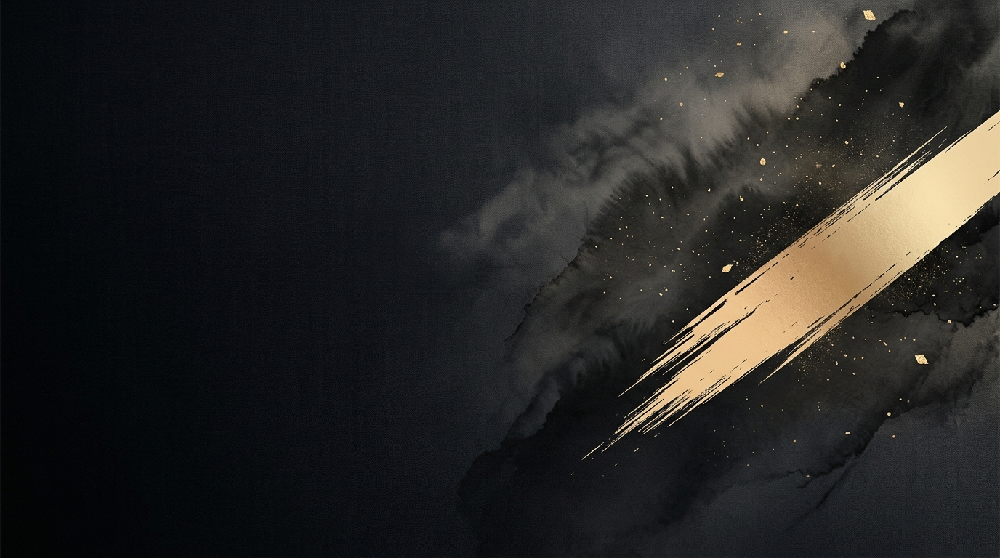
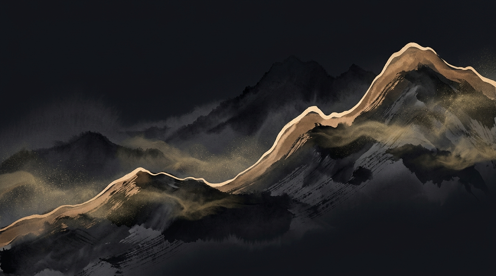
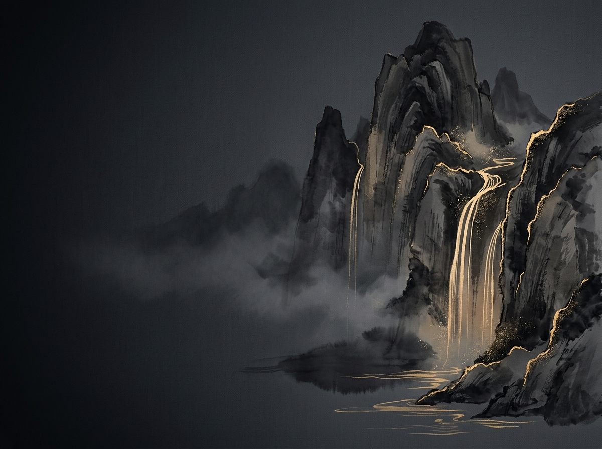
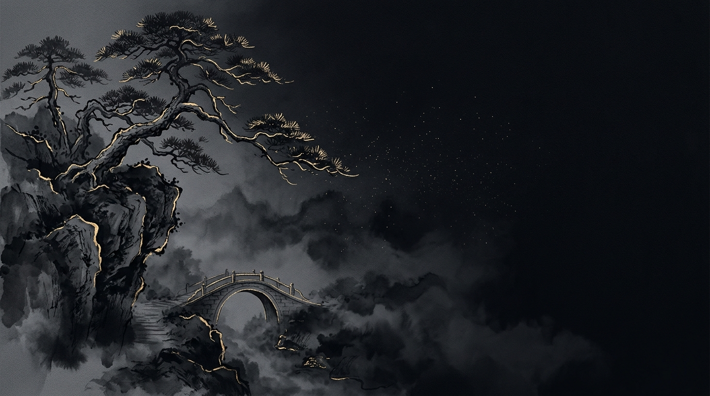
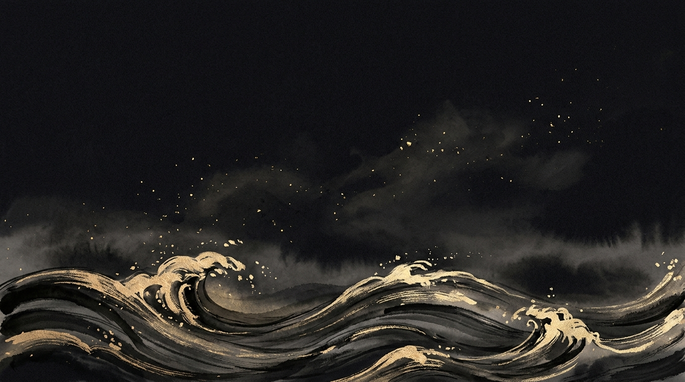
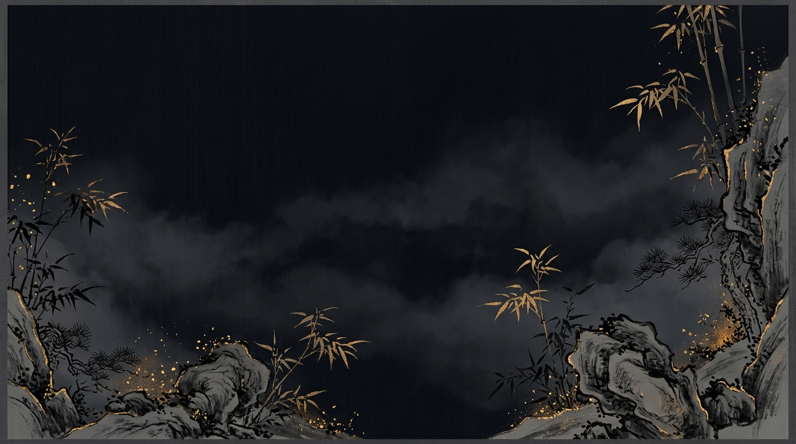
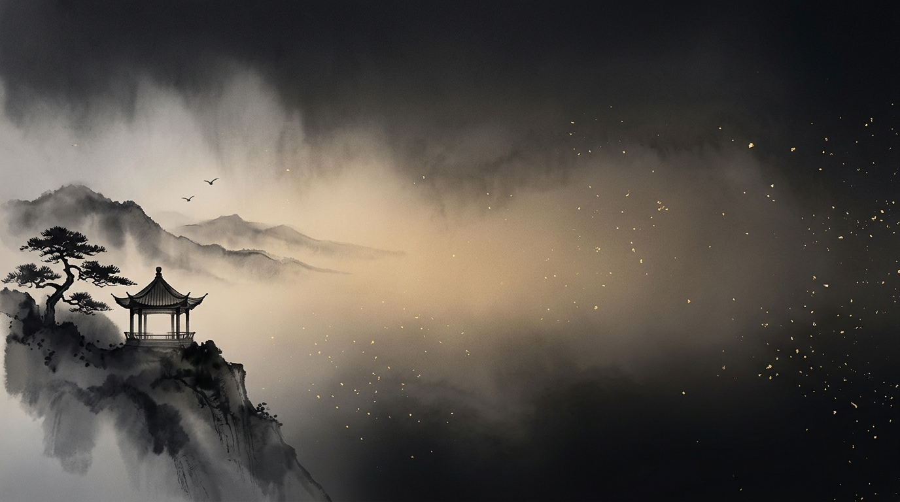
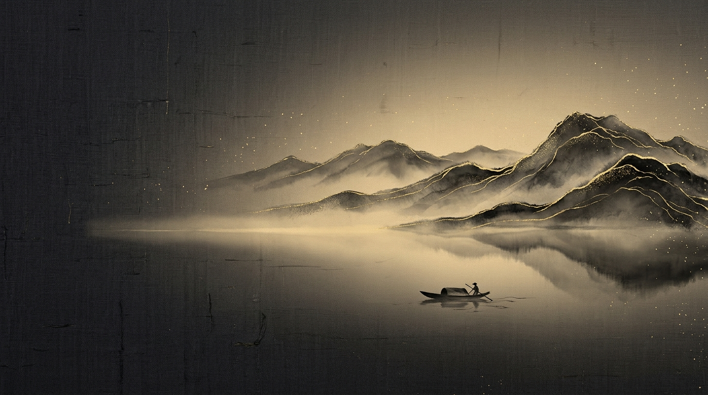

无壳造境
七绝成卷
彻底抛弃千篇一律的套壳幻灯片。由叙事编排梳理筋骨与画面意象，物理引擎执笔手写零框架动效，用斜刀、烈焰、重拳、千鹤、帷幔、朔风与纸团串联八幕长卷。

先破模板之壳
再立叙事之骨
先定框格再硬塞文字
传统工具先画好三栏格子与圆圈序号，水墨意境一入套壳便显得局促呆板，做十套像同一个模板翻印。
以画裁字，顺势成章
先推演情绪弧线与金句节奏，再观画作负空间手写流体排版，让每一页都像独立海报。

叙事层负责想清：
讲什么、如何起承转合

物理引擎负责：
把剧本锻造成电影级网页
一画一版式，手写精准布局
读取每幅画卷的留白朝向直接写 CSS Grid 与流体字阶，绝不把横卷硬裁进统一窄卡片。
多 Skill 协同：美学、画卷与物理引擎
融合 Hallmark 审美约束、Image Generator 联绘与 GSAP 3.15 + SVG + Canvas 实现物理转场。
真实浏览器录帧排错闭环
跑本地服务加 Chrome 无头抓帧与人眼审图，发现帷幔卡顿、文字闪屏立刻追根改到底。

叙事定灵魂意境，引擎锻造交互实体
灵感与叙事定锚
明确讲述主题、提炼 8 幕戏剧转折、敲定每幕画面构图方向与简短金句，让内容先站稳。
代码与物理动效落地
定向绘出配套水墨长卷、手写无壳代码与七大物理转场，自测无误后直接打包交付。

七绝物理转场：
每一页都能拆开实演
斜角斩裂
斜角落刃贯穿画幅，迸射金星火花并带动左右两片实景错位滑开。
指尖焚焰
以点击像素为火源，五阶分形噪波咬蚀整幅画面伴随余烬飘散。
连拳洞开
暴雨墨拳接连轰穿纸面撕开裂孔，末拳震碎整页飞散露出下幕。
千鹤载画
五十二只金羽折纸千鹤振翅斜掠画卷，掀卷旧页带走渐显新章。
垂幕对开
丝滑双翼垂坠幕布配八道立体折褶，顶部金环滑轨顺中缝扯开。
狂风吹飞
狂风掠过先吹起宣纸鼓浪褶皱，随墨风气流线将整页斜卷刮出画外。
揉皱丢出
正中急速捏皱缩为多面金箔折痕纸团露出新页，旋即抛物线甩飞出屏。
按页逐一演绎
从第 1 页播到第 8 页，每页自动匹配对应七绝动效，按顺序完整看遍七套转场。

沉淀为开源 Skill：
别人拿到也能换肤、改页数、加转场
四套色板一键切换（按 T 键实时试色）
已抽离 themes.css 视觉令牌与声明式 data-out-transition 属性。无论是玄墨鎏金、故宫朱砂、千里青绿或赛博暗刃，任意增删页数都能开箱即用。
单文件离线 HTML ＋ 8 页 16:9 高清 PDF
标准 PDF 本身无法运行 Canvas/SVG 物理特效；脚本一键打包成双击直接玩全部 7 绝转场的独立 .html，同时产出 1600×900 矢量清晰静态 PDF 方便群聊传阅。

意随画动
即刻开拍你的实战
从第 1 页一路翻至第 8 页，正好将七大物理转场完整演绎一遍。按 H 隐藏底栏即可纯净录屏，按 T 可随时切换开源主题配色；全套 Skill、打包脚本与单文件成品均已备妥。